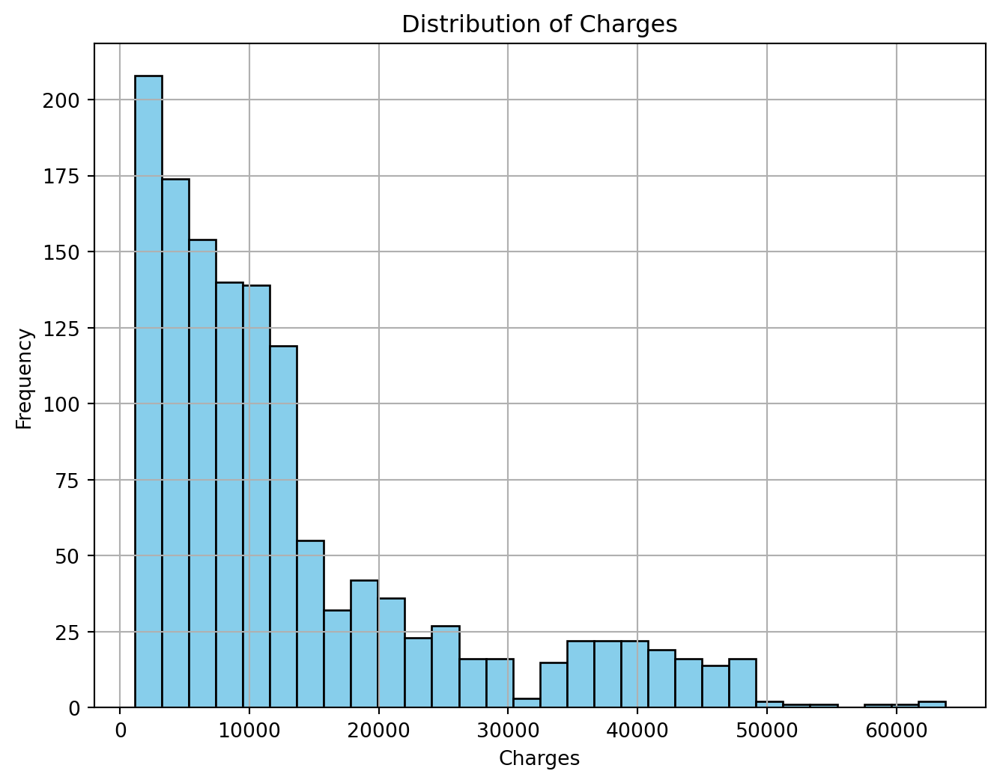
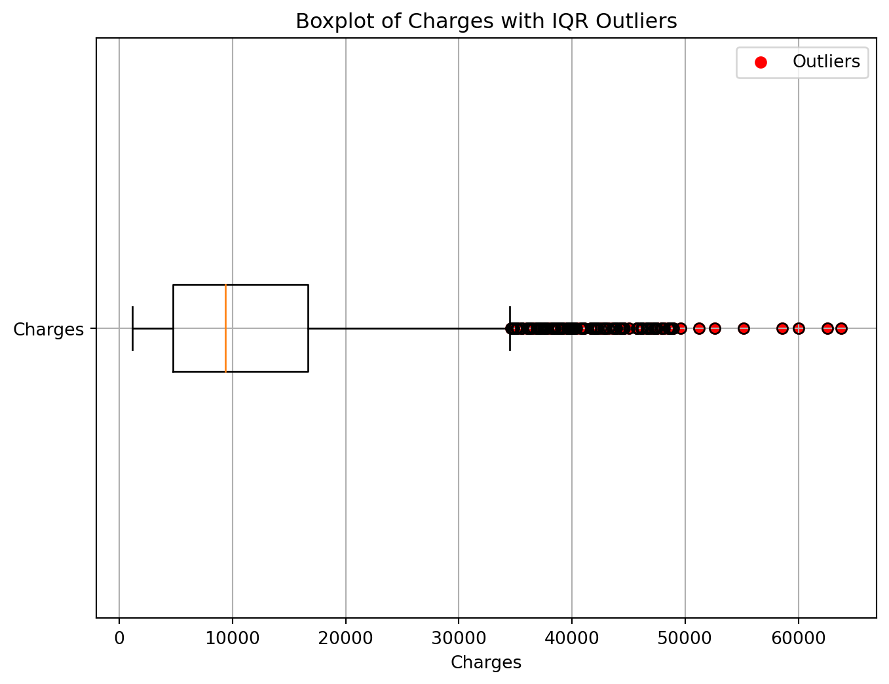

import pandas as pd
from sklearn.model_selection import train_test_split
from xgboost import XGBRegressor
from sklearn.preprocessing import PolynomialFeatures
from sklearn.linear_model import LinearRegression, LogisticRegression
from sklearn.metrics import r2_score, mean_absolute_error, mean_squared_error
import matplotlib.pyplot as pltOutlier detection
We will detect outlier in insurance charge prediction dataset then do some data cleaning and train regression model to predict insurance charges
df = pd.read_csv('data/insurance.csv')
df| age | sex | bmi | children | smoker | region | charges | |
|---|---|---|---|---|---|---|---|
| 0 | 19 | female | 27.900 | 0 | yes | southwest | 16884.92400 |
| 1 | 18 | male | 33.770 | 1 | no | southeast | 1725.55230 |
| 2 | 28 | male | 33.000 | 3 | no | southeast | 4449.46200 |
| 3 | 33 | male | 22.705 | 0 | no | northwest | 21984.47061 |
| 4 | 32 | male | 28.880 | 0 | no | northwest | 3866.85520 |
| ... | ... | ... | ... | ... | ... | ... | ... |
| 1333 | 50 | male | 30.970 | 3 | no | northwest | 10600.54830 |
| 1334 | 18 | female | 31.920 | 0 | no | northeast | 2205.98080 |
| 1335 | 18 | female | 36.850 | 0 | no | southeast | 1629.83350 |
| 1336 | 21 | female | 25.800 | 0 | no | southwest | 2007.94500 |
| 1337 | 61 | female | 29.070 | 0 | yes | northwest | 29141.36030 |
1338 rows × 7 columns
df.info()<class 'pandas.core.frame.DataFrame'>
RangeIndex: 1338 entries, 0 to 1337
Data columns (total 7 columns):
# Column Non-Null Count Dtype
--- ------ -------------- -----
0 age 1338 non-null int64
1 sex 1338 non-null object
2 bmi 1338 non-null float64
3 children 1338 non-null int64
4 smoker 1338 non-null object
5 region 1338 non-null object
6 charges 1338 non-null float64
dtypes: float64(2), int64(2), object(3)
memory usage: 73.3+ KB# Plotting a histogram of the 'charges' column
plt.figure(figsize=(8, 6))
plt.hist(df['charges'], bins=30, color='skyblue', edgecolor='black')
plt.title('Distribution of Charges')
plt.xlabel('Charges')
plt.ylabel('Frequency')
plt.grid(True)
plt.show()
Outlier Detection using IQR method
# Calculate the Interquartile Range (IQR)
Q1 = df['charges'].quantile(0.25)
Q3 = df['charges'].quantile(0.75)
IQR = Q3 - Q1
# Define the boundaries for outliers
lower_bound = Q1 - 1.5 * IQR
upper_bound = Q3 + 1.5 * IQR
# Find outliers
outliers_iqr = df[(df['charges'] < lower_bound) | (df['charges'] > upper_bound)]
# Plotting the boxplot for charges
plt.figure(figsize=(8, 6))
plt.boxplot(df['charges'], vert=False)
plt.title('Boxplot of Charges with IQR Outliers')
plt.xlabel('Charges')
plt.yticks([1], ['Charges'])
plt.scatter(outliers_iqr['charges'], [1] * len(outliers_iqr), color='red', label='Outliers')
plt.legend()
plt.grid(True)
plt.show()
print("Outliers using IQR method:")
print(outliers_iqr)Outliers using IQR method:
age sex bmi children smoker region charges
14 27 male 42.130 0 yes southeast 39611.75770
19 30 male 35.300 0 yes southwest 36837.46700
23 34 female 31.920 1 yes northeast 37701.87680
29 31 male 36.300 2 yes southwest 38711.00000
30 22 male 35.600 0 yes southwest 35585.57600
... ... ... ... ... ... ... ...
1300 45 male 30.360 0 yes southeast 62592.87309
1301 62 male 30.875 3 yes northwest 46718.16325
1303 43 male 27.800 0 yes southwest 37829.72420
1313 19 female 34.700 2 yes southwest 36397.57600
1323 42 female 40.370 2 yes southeast 43896.37630
[139 rows x 7 columns]print(f"Number of outliers using IQR method: {len(outliers_iqr)}")
print(f"Lower Bound: {lower_bound}")
print(f"Upper Bound: {upper_bound}")Number of outliers using IQR method: 139
Lower Bound: -13109.1508975
Upper Bound: 34489.350562499996Data preprocessing, filter outlier, and train models
##Converting objects labels into categorical
df[['sex', 'smoker', 'region']] = df[['sex', 'smoker', 'region']].astype('category')
df.dtypesage int64
sex category
bmi float64
children int64
smoker category
region category
charges float64
dtype: object##Converting category labels into numerical using LabelEncoder
from sklearn.preprocessing import LabelEncoder
label = LabelEncoder()
label.fit(df.sex.drop_duplicates())
df.sex = label.transform(df.sex)
label.fit(df.smoker.drop_duplicates())
df.smoker = label.transform(df.smoker)
label.fit(df.region.drop_duplicates())
df.region = label.transform(df.region)
df.dtypesage int64
sex int64
bmi float64
children int64
smoker int64
region int64
charges float64
dtype: object# Filter outliers
data_filtered = df[(df['charges'] >= lower_bound) & (df['charges'] <= upper_bound)]
# data_filtered = df
# Split data into features and target variable
X = data_filtered.drop(['charges'], axis=1) # Features
y = data_filtered['charges'] # Target variable# Split the data into training and testing sets
X_train, X_test, y_train, y_test = train_test_split(X, y, test_size=0.2, random_state=42)
# Initialize and fit the polynomial regression model
model = LinearRegression()
model.fit(X_train, y_train)
# Predict charges using the model
y_pred = model.predict(X_test)
# Evaluate the model using different metrics
r2 = r2_score(y_test, y_pred)
mae = mean_absolute_error(y_test, y_pred)
mse = mean_squared_error(y_test, y_pred)
rmse = mean_squared_error(y_test, y_pred, squared=False)
print(f"R^2 Score: {r2}")
print(f"Mean Absolute Error (MAE): {mae}")
print(f"Mean Squared Error (MSE): {mse}")
print(f"Root Mean Squared Error (RMSE): {rmse}")R^2 Score: 0.5580582759919098
Mean Absolute Error (MAE): 2791.8165704862845
Mean Squared Error (MSE): 27568455.24547175
Root Mean Squared Error (RMSE): 5250.567135602758